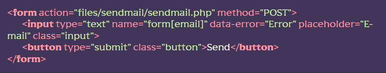

Підключення функціоналу
[ФАЙЛЫ] Копіюємо папку src/componetns/sendmail у папку src/files/sendmail
[HTML] Створюємо форму, вказавши в атрибуті action адреса files/sendmail/sendmail.php. Можна скористатися сніппетом formemail.
Приклад:
[Js] Також, за потреби, можна додати функціонал валідації та відправлення форми
[PHP] Усі налаштування щодо надсилання даних на пошту проводяться у файлі files/sendmail/sendmail.php згідно з документацією модуля PHPMailer